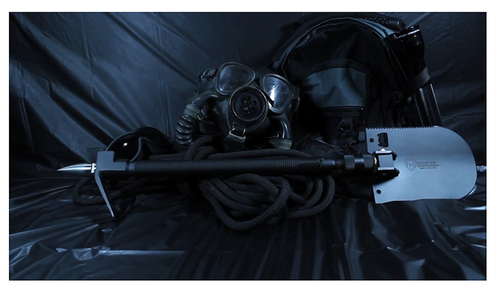

Def: To make the world safer, one headless zombie at a time


Stay calm. Well, as calm as you can.
If you haven't done so yet, watch Zombieland. It's so realistic we suspect it contains footage from human testing, but had to be disguised as a movie to avoid government suspicion.
The rules described will be your daily mantra. Learn them, memorize them.
In the movie everyone has a gun. If you can find one, you should get it and find it and point the end with the hole away from your face. If you can't find one, you'll need the next best things:
CROVELS

These wonderful things are a shovel, crowbar, pick, and secret compartment in one easy-to-carry-and-swing set. Buy five.
CHAINSWORDS

These combine the awesomeness of a chainsaw with the smooth handling of a sword. By smooth, I mean you probably aren't used to lifting anything this large, but you'll get used to it. Or, drop it on your foot and die from brain eating zombies.
PIZZA
It's a vegetable, it's delicious when cold, and it's soooo good. Stock up on this staple for survival.
TWINKIES

Twinkies have a longer shelf life than your current life expectancy. Find some and hoard them, a portable source of nutrition is invaluable.
Finally, REDBULL
If you drink enough of it, it gives you wings. How can you argue with logic like that? I mean, don't you want to fly over your brain-eating enemies?